Part 1
- Walk through the ray generation and primitive intersection parts of the rendering pipeline.
- As specified by the spec, the general approach for ray generation is to transform the coordinates from the world space to camera space, generate the ray in camera space, and then translate the ray into world space. We accomplished this by converting hFov and vFov into radians (they were in degrees initially) and then using the hFov and vFov to find the minimum and maximum X and Y coordinates of the intersection box. Once we get that, we initialize the coordinates of the camera in the coordinate space and then 2 Vector 3D objects: one for the camera and one for the world. We normalize the world Vector and create a ray with it.
- From lecture, we know that a ray intrinsically has a origin and a direction, so a primitive intersection algorithm will check to see if a ray intersects a surface by substituting a ray equation into that surface equation and solving for the value(s) for t of the ray intersection. Sometimes we can also find the plane that the surface lies in and find if the ray intersects the plane in a specific range to conclude if the ray intersects the surface.
- Explain the triangle intersection algorithm you implemented in your own words.
- A ray is parametrized by a starting point and a direction and we want to find a t between min_t and max_t that intersects the triangle. Our goal is to find if the ray intersects at a t in that given range. A few specific scenarios could occur: the ray and triangle are parallel, the triangle is behind the ray’s origin, or the ray and triangle intersect.
- Case 1: If the ray and triangle are parallel, the triangle’s normal vector is perpendicular to the ray.
- Case 2: If the triangle is behind the ray’s origin, the t value we get will be negative and we can account for this.
- Case 3: If the ray and triangle intersect, we can find the intersection of the ray and the plane in which the triangle is and then check if that point is inside the triangle.
- Specifically, to find if we have a triangle intersection with a ray, we find the cross product of the ray direction with a side vector of the triangle and then find the dot product of this result with another side vector of the triangle. We can continue by getting the vector from the ray origin to a point on the triangle and using that to find another cross product. Then, we calculate the dot product of this resulting vector and a triangle side vector to check if it’s in the min_t to max_t range.
- Show images with normal shading for a few small .dae files.

 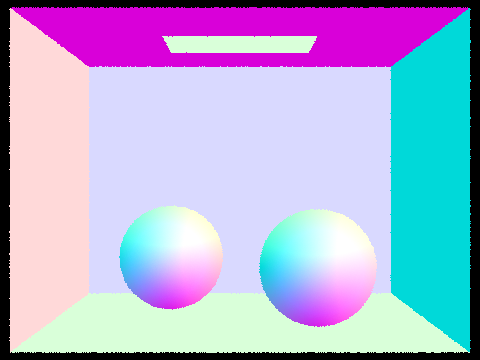
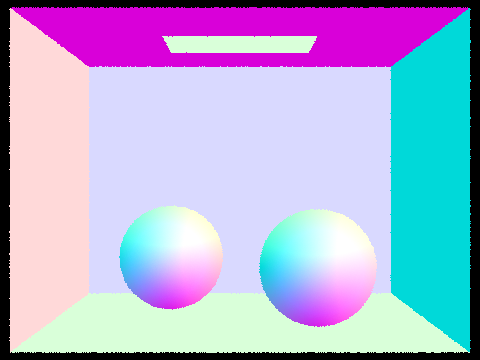
Part 2
- Walk through your BVH construction algorithm. Explain the heuristic you chose for picking the splitting point.
- We use a recursive algorithm to build up the BVH, starting with the root node and the full list of all the primitives in the scene. Inside construct_bvh() we first compute the bounding box of the list of primitives passed in and create a node with that bounding box. If this node is a leaf node (the number of primitives it contains is less than max_leaf_size), we set the node to contain the list of primitives and return it. In the recursive case, we first compute which axis to split on. We calculate the bounding box of the centroids of all the primitives passed in, and choose the largest axis to split on. We then partition the list of primitives into a left half and right half depending on whether their centroid falls to the left or to the right of the midpoint of the split axis. Finally, we recursively call construct_bvh() on the left and right list of primitives.
- Show images with normal shading for a few large .dae files that you can only render with BVH acceleration.
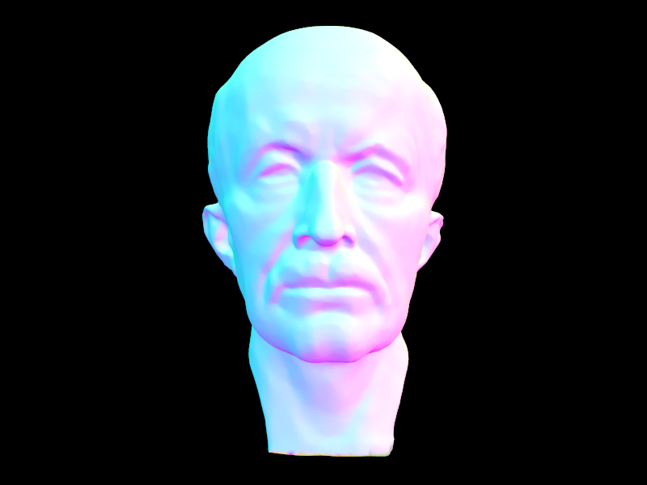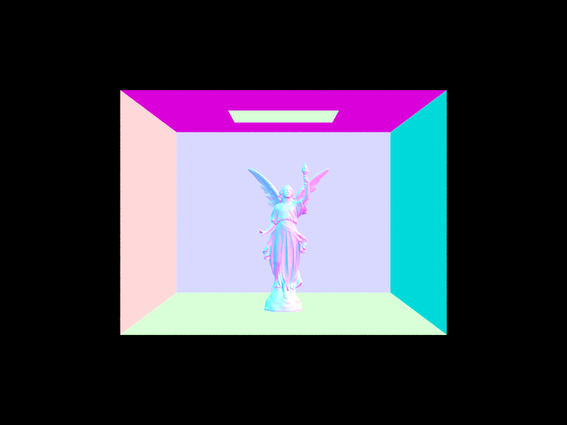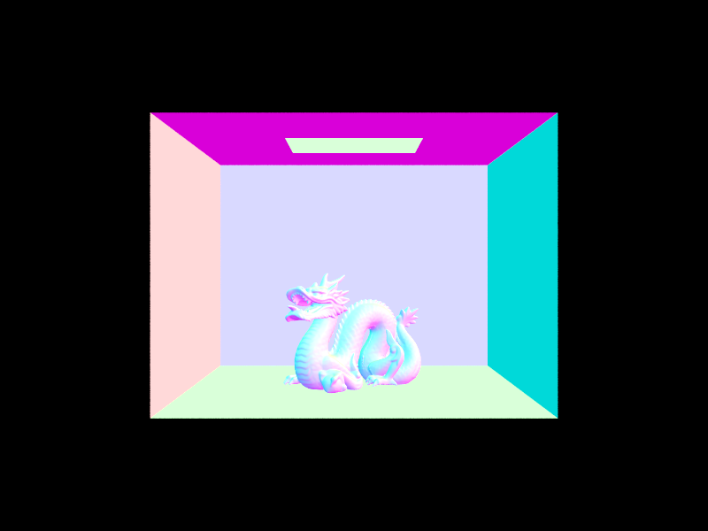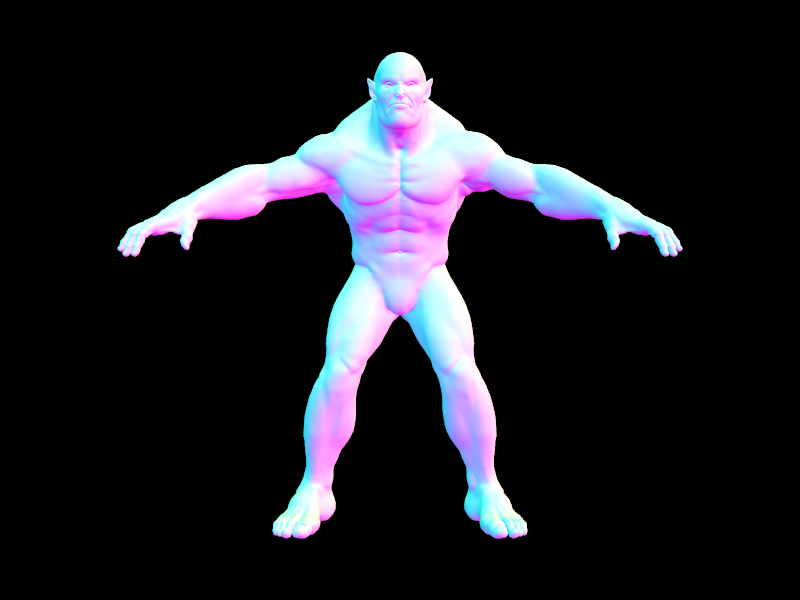
- Compare rendering times on a few scenes with moderately complex geometries with and without BVH acceleration. Present your results in a one-paragraph analysis.
- BVH acceleration makes rendering moderately complex to complex scenes much faster. For example, rendering the cow took 36.5s vs 0.30s with BVH acceleration. For the teapot, 10.7s vs 0.25s, and for the beetle 37.8s vs 0.34s. Most rays do not intersect most primitives so BVH acceleration allows us to avoid many intersection tests by only having to test for intersections with primitives if the ray actually hits their bounding box. In addition, constructing the BVH takes negligible time compared to the savings by drastically reducing the number of intersection tests.
Part 3
- Walk through both implementations of the direct lighting function.
Direct Lighting Hemisphere:
We are trying to estimate the amount of lighting at a point in the scene where a camera ray intersects, hit_p. For each of num_samples, we generate a random ray sampled from the hemisphere uniformly. We then send a new ray out in this direction starting from hit_p and if it intersects a light, we add to the output the amount of light arriving in this direction at hit_p multiplied by the BSDF of the material for the two angles and the probability of selecting this sample direction, as given by the Monte Carlo estimator formula.
Direct Lighting Importance:
For direct lighting, we know that we only care about a sample ray sent out from hit_p if it hits a light source. Therefore, in this function, we work backwards and sample rays directly from a point on a light source back to hit_p. However, we have to check to ensure that hit_p is not actually obstructed from the light source by another object in the scene. We generate a shadow ray from hit_p in the sampled direction towards the light source, and if this ray does not intersect any other object before hitting the light source, then we know that the light source is contributing to the illumination at hit_p. Thus, like before, we add to the output the amount of light arriving in this direction at hit_p multiplied by the BSDF of the material for the two angles and the probability of selecting this sample direction, as given by the Monte Carlo estimator formula. We can make a further optimization and only sample point light sources once, since every sample will be the same point anyway.
Show some images rendered with both implementations of the direct lighting function.
Direct Lighting Hemisphere:
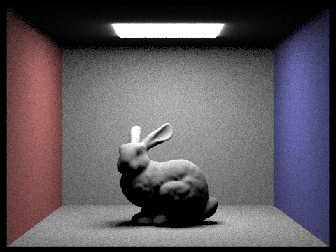
Direct Lighting Importance:
Direct Lighting Hemisphere:
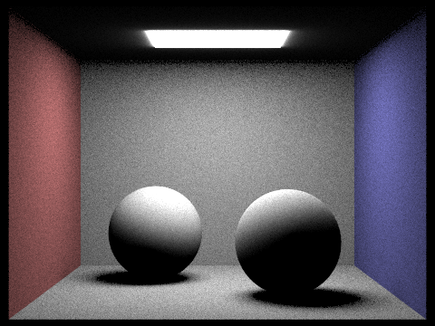
Direct Lighting Importance:

- Focus on one particular scene with at least one area light and compare the noise levels in soft shadows when rendering with 1, 4, 16, and 64 light rays (the -l flag) and with 1 sample per pixel (the -s flag) using light sampling, not uniform hemisphere sampling.
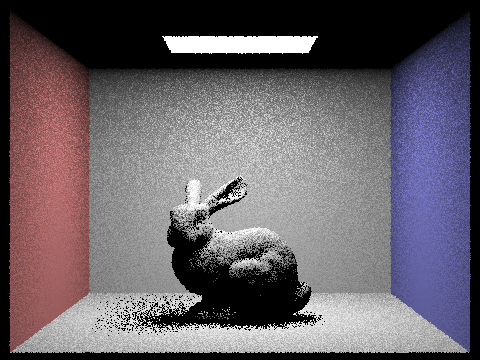
1 light ray
4 light rays
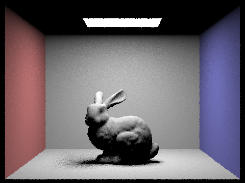
16 light rays
64 light rays
As the number of light rays goes up, soft shadows become less noisy. With only 1 light ray, the shadow is extremely noisy. With 64 light rays, the shadow is much more well-defined and clear, although there is still some visible noise remaining.
- Compare the results between uniform hemisphere sampling and lighting sampling in a one-paragraph analysis.
Uniform hemisphere sampling results in much noisier images compared to lighting sampling. When we uniformly sample a random direction in the hemisphere, most of those rays will not end up intersecting a light source, which are precisely the directions we care about the most. With importance sampling, we work backwards and only sample rays that end up intersecting a light source (if they are not occluded). This results in much less noisy images since we are guaranteed to sample the important directions that we care about, while with uniform hemisphere sampling it is random whether or not we will end up sampling these important directions. Lighting sampling also enables us to render images with point light sources, since the chance of randomly sampling a direction that intersects a single point is extremely low.
Part 4
- Walk through your implementation of the indirect lighting function.
To estimate global illumination, we need to consider not just direct lighting, but also indirect lighting (lighting that arrives at a point not directly from the light source but reflected off another object in the scene).
We use a recursive algorithm to calculate these bounces of light. To calculate the light at a point, we sum up the direct lighting arriving at that point, and then sample a direction and calculate the light arriving in the direction from the next intersection point. But for this we need to know the light at that intersection point, which is where the recursion comes from. In order to prevent what would otherwise be infinite recursion, we have two stopping mechanisms. The first is a max_ray_depth which means once we hit that depth of recursion we will not send out another sample ray and just return the direct lighting at that point. We also use a Russian Roulette implementation, where at every depth level before max_ray_depth there is a certain termination probability with which we will not send out another sample ray. We also have to adjust our Monte Carlo estimator to account for this termination probability in order to remain unbiased.
- Show some images rendered with global (direct and indirect) illumination. Use 1024 samples per pixel.
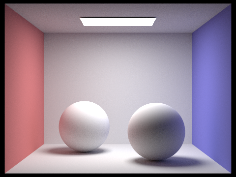
- Pick one scene and compare rendered views first with only direct illumination, then only indirect illumination. Use 1024 samples per pixel. (You will have to edit PathTracer::at_least_one_bounce_radiance(...) in your code to generate these views.)
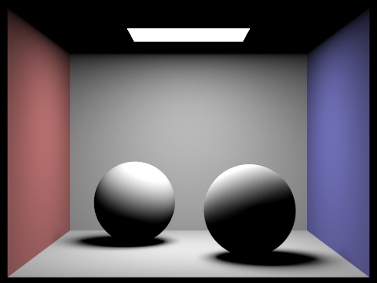
Direct Illumination Only
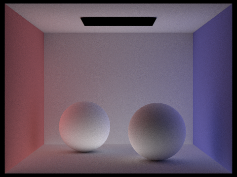
Indirect Illumination Only
- For CBbunny.dae, compare rendered views with max_ray_depth set to 0, 1, 2, 3, and 100 (the -m flag). Use 1024 samples per pixel.
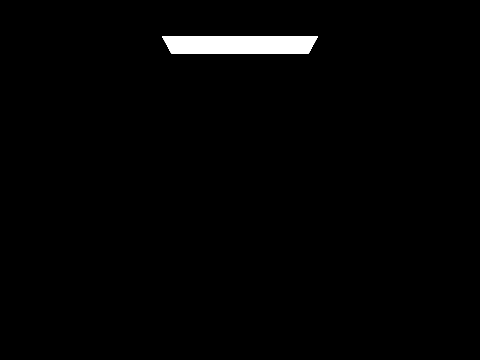
max_ray_depth = 0
max_ray_depth = 1
max_ray_depth = 2
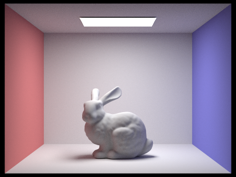
max_ray_depth = 3
max_ray_depth = 100
- Pick one scene and compare rendered views with various sample-per-pixel rates, including at least 1, 2, 4, 8, 16, 64, and 1024. Use 4 light rays.
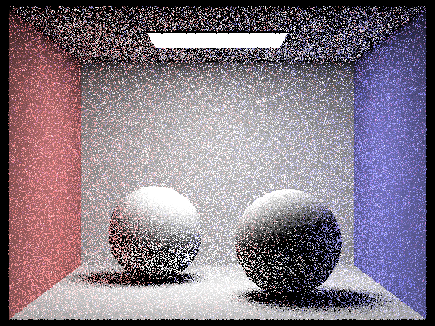
1 sample per pixel
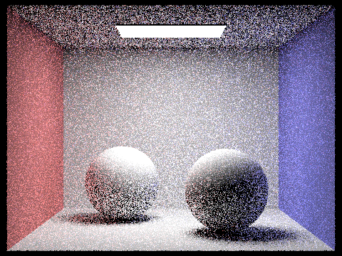
2 samples per pixel
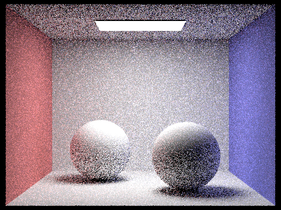
4 samples per pixel
8 samples per pixel
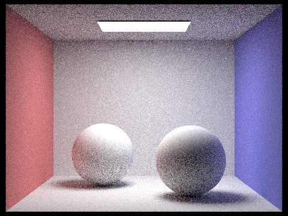
16 samples per pixel
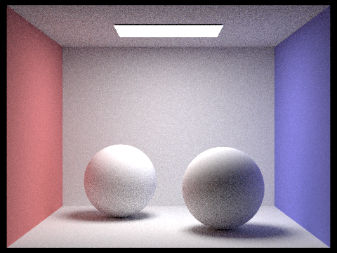
64 samples per pixel
1024 samples per pixel
Part 5
- Walk through your implementation of the adaptive sampling.
With adaptive sampling, we want to be able to use a large number of samples in the difficult parts of the image but speed up rendering by returning early for easier parts of the image once they have already converged. To do this we keep a running sum of the illuminance and squared illuminance of all the samples thus far. This allows us to calculate the mean and variance of the samples. Then we calculate the pixel’s convergence according to the formula provided and check if this value is less than the max tolerance. If it is (the pixel has converged), we stop sampling and return the average value. For efficiency, we do not perform this convergence check after every sample, but after every samplesPerBatch samples.
- Pick one scene and render it with at least 2048 samples per pixel. Show a good sampling rate image with clearly visible differences in sampling rate over various regions and pixels. Include both your sample rate image, which shows how your adaptive sampling changes depending on which part of the image you are rendering, and your noise-free rendered result. Use 1 sample per light and at least 5 for max ray dept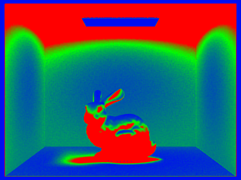